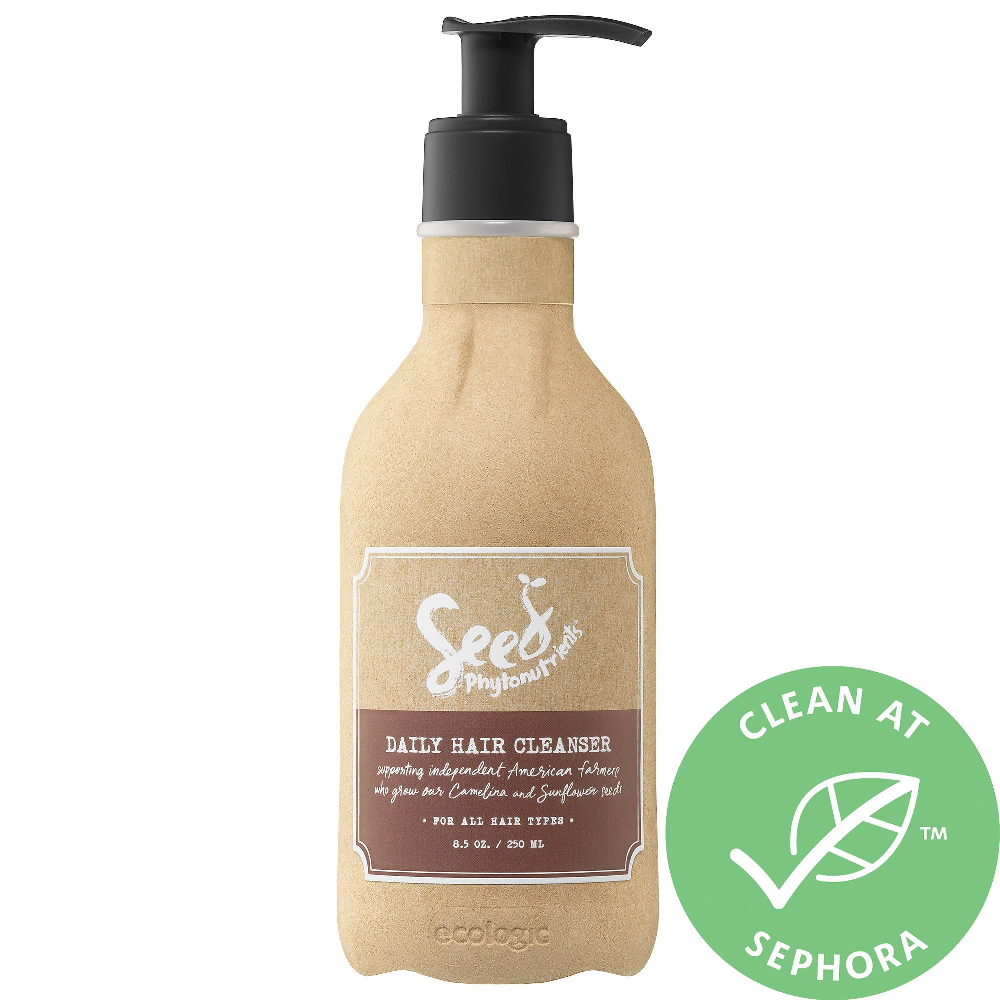
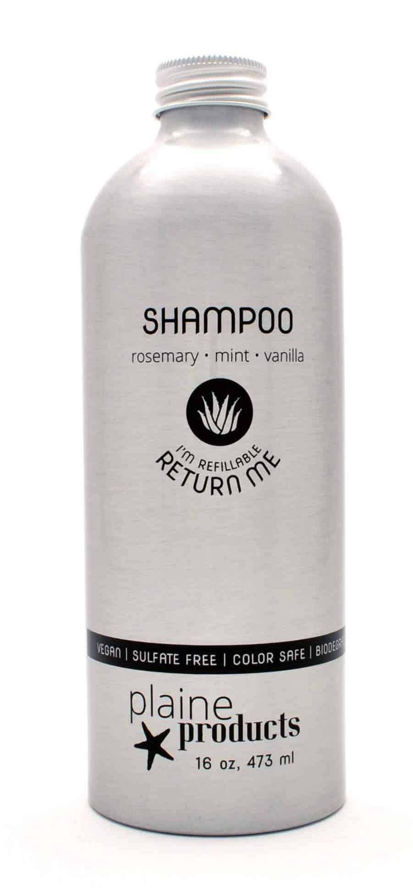
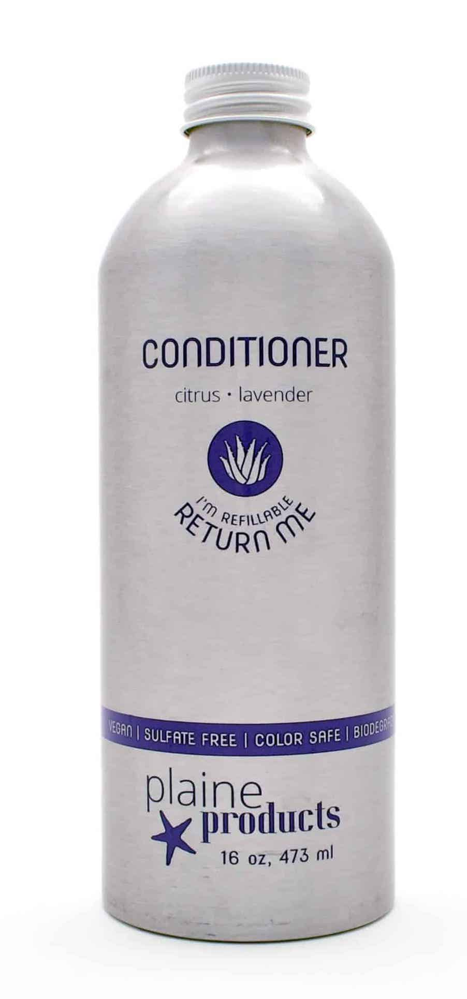
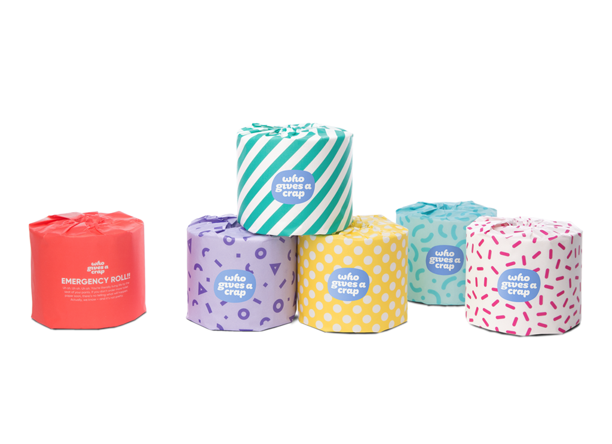
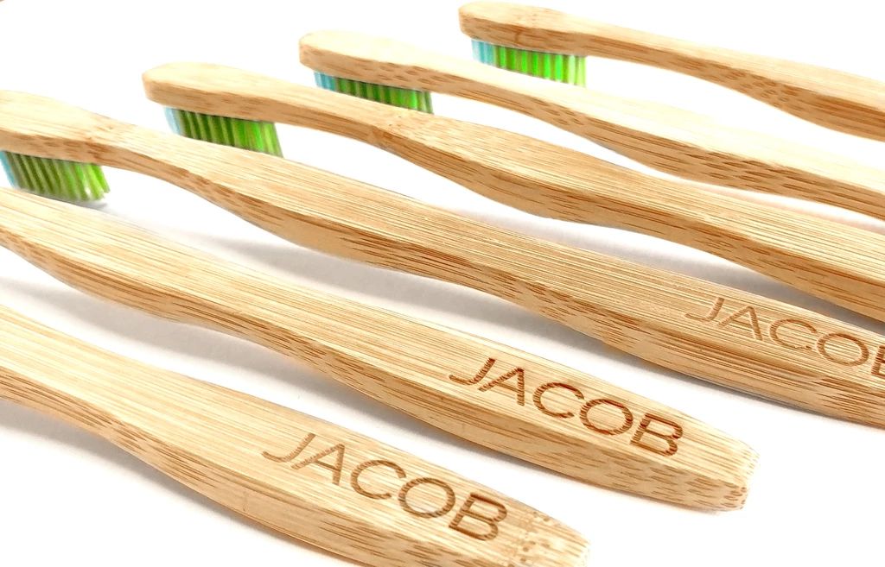
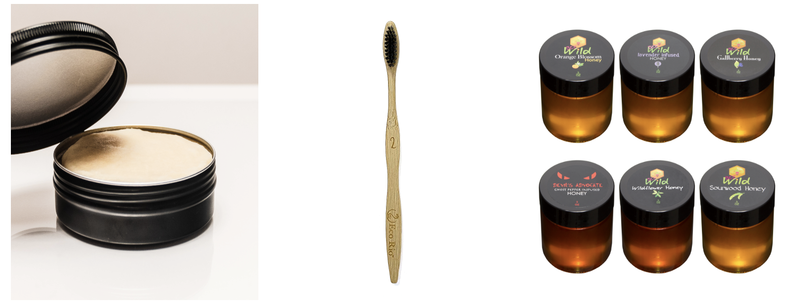
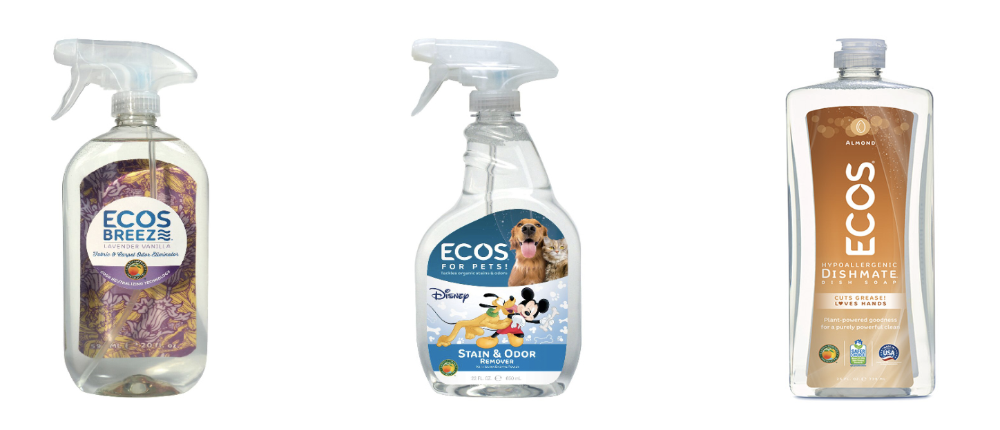

Seed Phytonutrients is a company who specializes in providing the most natural,
biodegradable products to their clients. Their sole mission is to help minimize the amount of plastic
and non-recyclable products in their packaging through using a paper-like material in their shampoos
and body moisturizers and a mineral coating helps the paper-like material dry faster than normal paper.
Seed Phytonutrients prides themselves in being the first ever company to create a paper bottle and create
sustainability one product at a time. Support their movement!


Coming from the Bahamas and their father being a small-business entrepreneur, sisters, Lindsey and Alison
Delaplaine, decided to create a business that would enable customers to make it simple to help reduce the amount of plastic
they own in their bathrooms. That is how Plaine Products came to life. With their very own refillable aluminum shampoo bottles,
they are able to refill empty bottles, which help to minimize the amount of plastic in the ocean. Despite their products being a
little bit pricey, in the long run, their products are like no other; with the variety of products from rosemary vanilla to citrus lavender,
Plaine Products has it all.

Looking for some sustainable toilet paper? Then, Who Gives a Crap might just be for you! With 50% of their toilet paper comes
from recycled toilet paper, Who Gives A Crap has been able to deliver to their customers delightful and consistent good toilet paper that helps
to build toilets around the world. In addition, they donate 50% of their profits to charity and have ventured to challenge themselves to have
a plastic-free journey since the majority of their packaging materials are derived from plastic. If you are looking for good toilet paper and
trying to have a good bum, then Who Gives A Crap can be the toilet paper of your dreams.

Looking for some cheap and sustainable toothpaste and toothbrush? Look into this company who was established in 2013 during Earth Day. As a means to reduce
the amount of plastic floss and toothpaste that has a ton of toxic chemicals, WooBamboo! Has made its sole mission to deliver to their customers the utmost natural, sustainable
hygiene products. With their Natural Toothbrush, Natural Floss, and Pet Oral Care; WooBamboo! fits every families needs. So do you Woo?

Family owned and operated since 1967, Ecos is a team of visioneers who believe in all people having access to clean, affordable, eco friendly products. Its’ products
are top quality and have the freshest scents out there. All natural ingredients, you will never want to switch to any other kind of hygiene brand again!

Leaf’d uniting a sustainability movement by making it easy to search for eco brands and products, learn about the latest green trends, and connect with non profits. They donate
a percentage of all purchases to partnering organizations! Leaf'd has you covered for all your food, health, and clothing needs all while keeping its products 100% natural!
❮
❯